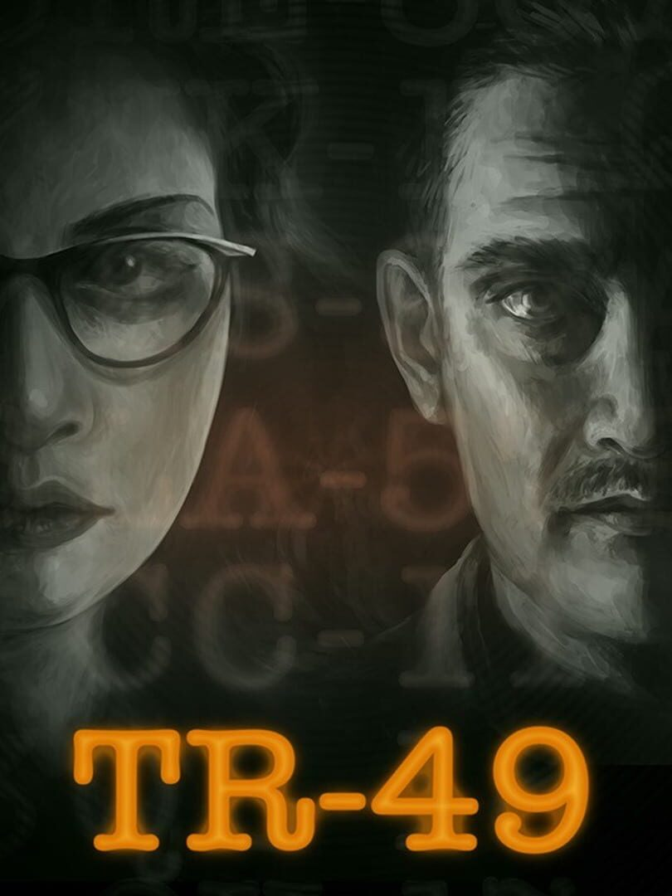

TR-49
TR-49
Details
 |
|
| Playtime | Not Played |
| Last Activity | Never |
| Added | 2026-08-21 17:24:56 |
| Modified | 2026-08-21 17:25:51 |
| Completion Status | Not Played |
| Library | Steam |
| Source | Steam |
| Platform | PC (Windows) |
| Release Date | 2026-01-21 |
| Community Score | |
| Critic Score | 82 |
| User Score | |
| Genre | Adventure Puzzle Visual Novel |
| Developer | inkle |
| Publisher | inkle |
| Feature | Single Player |
| Links | Steam Official Website Bluesky Discord Twitch Nintendo Wikipedia |
| Tag | 2D Adventure Alternate History Detective Dialogue Heavy Dynamic Narration Female Protagonist Interactive Fiction Investigation Minimalist Mystery Narrative Nonlinear Philosophical Puzzle Sci-fi Singleplayer Soundtrack Story Rich World War II |
Description
A voice is saying your name. A WWII-era machine, long hidden in a church basement, whirs to life. Through a crackling speaker, a man asks you to find a stolen book. He only knows the title. Time is running out.
The machine, created by Bletchley Park engineers Cecil Caulderly and Beatrice Dooler, contains a vast archive of obscure books, letters, and journals fed in over the span of fifty years in an attempt to crack the code of reality. As their lives fell apart, the machine kept working.
Navigate the computer’s archive. Link its obscure texts and uncover its creators’ secrets. Communicate with the man behind the speaker to figure out your role in this mystery. Destroy the book at the core of the machine — before it’s too late.

Deduce links through the archive to locate hidden sources.
Unravel the stories and unearth the secrets of the books’ authors and the machine's creators.
Map the archive and find the book that will rewrite the world.

Talk with your handler at any time, creating a dynamic audio drama that responds as you explore.
Featuring the voices of Rebekah McLoughlin (The SCP Archives, Eternal Threads), Paul Warren (A Highland Song, Viewfinder, The Séance of Blake Manor) and Phillipe Bosher (Baldur's Gate 3, Doctor Who, The Hitchhiker’s Guide to the Galaxy).
Original soundtrack by Laurence Chapman (A Highland Song, Heaven's Vault, The Mask of the Rose).

TR-49 takes inspiration from narrative deduction games like The Roottrees are Dead, The Return of the Obra Dinn, Type Help and Her Story, and from audio dramas like The Magnus Archives and ars PARADOXICA.
Written and created by the award-winning team behind Heaven's Vault, Overboard!, and A Highland Song.